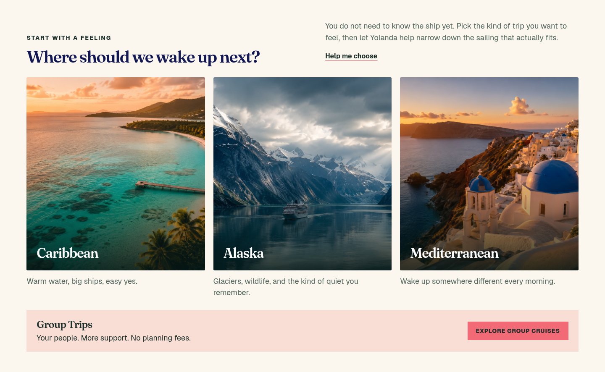
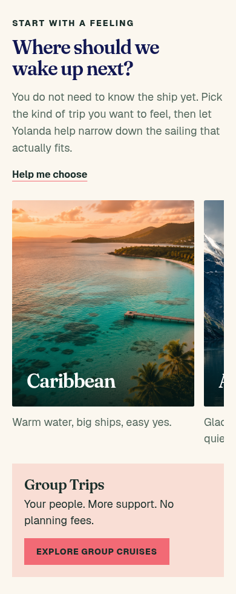
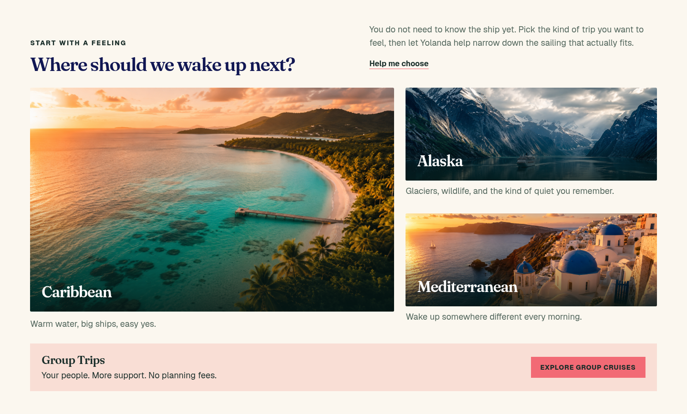
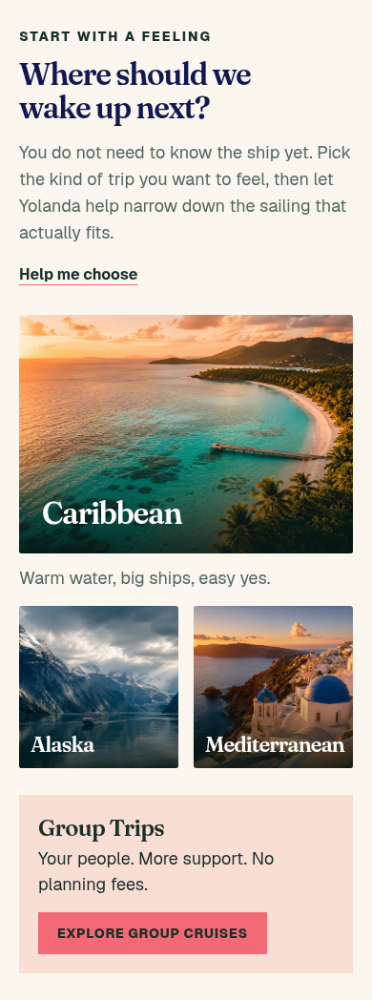

Destination layout previews
Two ways to let the destination imagery lead. These are mockups for comparison; the homepage destination section is unchanged.
Tap any image to open it at full size. Open the phone preview beneath each option to compare mobile layouts.
A — Three destination portraits
Recommended: Caribbean, Alaska, and Mediterranean each get a large image and equal visual presence. On phones, visitors swipe between destination portraits.

View option A on a phone

B — Panorama and supporting images
A large Caribbean panorama leads, with Alaska and Mediterranean stacked alongside it. On phones, the panorama sits above the two smaller destination photos.

View option B on a phone
